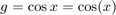

Esimerkkitiedosto (tämä tiedosto toimii esimerkkitiedostona, jonka pohjalta voi tehdä harjoitusten palautuksia)
- Harjoitus X (tai miksei harjoitustyö Y)
- Etunimi Sukunimi
- --- muuta olellista
Contents
"Sektioajattelu"
Harjoituksen eri tehtävät on hyvä jakaa sektioihin. Tarvittaessa myös tehtävä voidaan jakaa sektioihin.
T2 (esimerkki)
Tehtävään on hyvä lisätä kommentoinnit (mitä tehdään)
Silmukkarakenteet on hyvä olla sisennettynä ja kaikki mahdolliset komentorivit päätettynä ; (tietenkin sellaiset joita tarvitaan niin ei)
Alla on koodi, jolla ilmeisesti lasketaan käyrän ja -akselin väliin jäävää pinta-alaa, mutta dokumentoiti ja kommentointi on vajaa...
clc, clearvars, close all p=[1]; n=10; for i=1:n p(end+1)=p(i)+(4/n); end %test y=sqrt(p(2:end)); x=1:0.001:5; f=@(x) sqrt(x); PintaAla=sum(y)*4/n TarkkaPintaAla=integral(f,1,5) figure(1) plot(p(2:end),y,'ro') hold on plot(x,f(x),'b')
PintaAla = 7.030434299132926 TarkkaPintaAla = 6.786893258332632
MATLAB tiedostojen "julkaisu" (publish)
Matlab tiedostot voi muuntaa toiseen formaattiin (esimerkiksi HTML, .doc, LaTeX) Tälläistä formaattia voi olla helpompi tarkastella. Pointtina on se, että hyvin tehty m.tiedosto toimii itsessään sellaisenaan, mutta on tarvittaessa käännettävissä toiseen formaattiin.
Tutustu itsenäisesti seuraaviin ohjeisiin:
https://se.mathworks.com/help/matlab/matlab_prog/publishing-matlab-code.html
https://se.mathworks.com/help/matlab/ref/publish.html
Tarkastele myös pääikkunan yläosassa olevaa PUBLISH välilehteä, se sisältää monia valmiita ominaisuuksia, joista voi olla hyötyä.
Numeerisesta integroinnista (MATLABin omat funktiot)
YouTube listatuissa videoissa on käytetty MATLABIN omaa funktiota quad. Tämä on vanhentunut ja komentoa integral suositellaan käytettävän. Sana quad viittaa sanaan kvadratuuri, joka yleisesti tarkoittaa numeerista integrointia. Tutut tai ainakin tällä kurssilla tutuiksi tulevat Riemannin summa, puolisuunnikassaantö ja Simpsonin sääntö kuuluvat niin sanottuihin kvadratuurikaavoihin.
Kuvien piirtämisestä
Kuvien tulee olla selkeitä, ja jossa samassa kuvassa esitetään useampia käyriä ne tulee identifioida. Säädä kuvat kulloisenkin tilanteen mukaan.
Alla on piirretty funktioden f=sin(x) ja g=cos(x) kuvaajat. Matemaattiset merkinnät voi tehdä myös LaTeXilla:

clc,clearvars,close all x=0:pi/50:2*pi; g=cos(x); figure(2) box on; plot(x,sin(x),'LineWidth',1.5); hold on; plot(x,g,'r.','MarkerSize',10); plot([0 7], [0 0],'k') ylim([1.25*min(g) 1.25*max(g)]); xlabel('$x$','Interpreter','latex'); ylabel('$y$','Interpreter','latex'); legend('f=sin(x)','$g=\cos(x)$','Interpreter','latex'); set(gca,'fontsize', 12);
Tämän tiedoston voi ajaa kokonaan, sektioittaan, sekä Publish toiminnolla
Kopioimalla seuraavat komennot komentoikkunaan ja saat luotua .doc tiedoston (muista tiedostopolku)
publish('Esimerkkitiedosto.m','doc');
winopen('html\Esimerkkitiedosto.doc')
Jos tiedoston formaattia ei määritä, oletuksena tulee .html:
publish('Esimerkkitiedosto.m');
winopen('html\Esimerkkitiedosto.html')